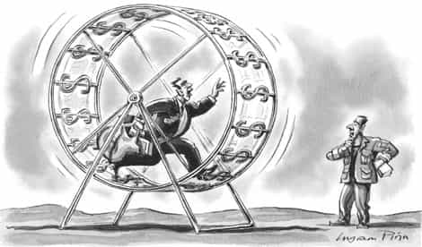

Daryush "Roosh" Valizadeh created ROK in October 2012. You can visit his blog at RooshV.com or follow him on Twitter and Facebook.


I recently took on a month-long project that served as a corporate job simulator, a full decade after quitting my microbiologist career. This short project was a powerful reminder how modern work is incompatible with human contentment.
During my project, I woke up every day at the relatively reasonable time of 8:30 a.m. to be at “work” at 9:00 a.m. I then had to pay attention, focus, cooperate with others, and do mentally intensive tasks. This project required five hours of solid work a day, which translates to an 8-hour a day office job that includes downtime and extended breaks.
The first side effect I experienced was having practically no thinking ability left over after work. It was extremely difficult to do my own writing—my brain simply didn’t want to cooperate. I vegetated endlessly in front of YouTube and Twitter, whereas usually I’d get bored of them relatively quickly.
Secondly, I realized that my unique male brain is not designed to pay attention for prolonged periods of time in cooperative environments. I did not want to sit down continuously for hours, wait my turn to speak, and pretend to be “nice” to others. I also saw the females present not as my intellectual equals—even if they were smart—but as fodder for sexual fantasies that gave me distracting boners. The women seemed to greatly enjoy this environment, probably because men treated them with great respect just because they were women, regardless of their intellectual contributions.
Thirdly, the work environment created so much inner tension that I strongly ached for doses of pleasure in the form of alcohol, coffee, sugar, or masturbation. I successfully quit coffee for the three months prior but now I craved it daily. I’d masturbate after lunch instead of wait until the late evening. I sought out sugar and other carb-based foods far more than usual. I also allowed excuses of fatigue to decrease my gym routine. The main ways my body wanted to relieve work tension was through actions that are likely to cause obesity, decreased muscle mass, and other forms of body degradation.
Lastly, I became more anti-social. Spending so many hours with my co-workers used up all my social fuel for the day. Afterwards, I had to stay silent and alone to recover. I didn’t want to talk to any girls, even if I was horny, and in the rare occasion I did manage to flirt, it would fall on the weekend when my tank was partially replenished. My social life was greatly harmed during a peak summer season when I should’ve been out most nights making big moves.
This experiment was disconcerting because it made me realize how fragile my energy really is. Work used up all my daily stores of focus, willpower, creativity, and extroversion, leaving almost none for my own projects and goals. I temporarily gave this project my lifeblood and in exchange I received a narrow benefit and the slothful need to lounge on the couch while snacking on munchies.
It makes complete sense to me why, after quitting my job ten years ago, I did not consider resuming it, even when my income was at poverty level. Leaving that job unlocked bountiful energy that I devoted into writing, internet projects, and basic life enjoyment. Working again would destroy that. Even if you have a job that is not physically taxing, it may be creating enough fatigue and tension that your body is demanding release through perverted leisure, alcohol, and unhealthy food, hence the typical pattern of working all week only to get wasted on the weekends.
We have to ask if we were designed to work as much as is expected by society, especially upon realizing that the 40-hour work week was a random compromise between government, trade unions, and factory owners during the Industrial Revolution that aimed to keep the slaves from being worked to death or outright revolting. When you’re in your early 20’s and full of energy, it’s possible to work even more than 40 hours a week while also socializing and pursuing your own hobbies, but as you age, you’re sure to enter the “I’m tired” zone and have to essentially dedicate your life to your job. Based on my month-long experiment, I believe men who don’t love their jobs are sacrificing more than just their time for what amounts to material reasons that are not necessary for survival.

I resumed my old ways as soon as the job ended. I woke up later, started writing again, took random bike rides when the sun was out, and resumed socializing with beautiful women. Without any financial goals or people to impress, I have to work just hard enough to keep the lights on, which is certainly not 40 hours a week.
If I ever do enter dire financial straights and have to work a normal job, I already know I’ll be scheming from day one to find a way out, or seek seasonal work in the form of a music band roadie or cruise ship bartender. A job is just a means to living an enjoyable life, not the end itself, but when you work a full time job, it becomes that much harder for your life to be about anything else.
This article was originally published on Roosh V.
Read Next: Do Not Work In A Job That Employs Women